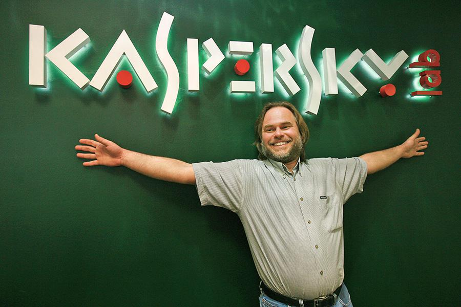

Ранние годы
Евгений Касперский родился 4 октября 1965 года, был единственным ребёнком в семье.
Начал обучение в средней школе № 3 имени Гастелло в подмосковном городе Долгопрудный. Ещё в школе Касперский начал углублённое изучение математики в рамках спецкурса. После победы в математической олимпиаде в 1980 году был зачислен и в 1982 году окончил физико-математическую школу-интернат № 18 имени А. Н. Колмогорова при МГУ. В 1987 году окончил 4-й (технический) факультет Высшей школы КГБ (в настоящее время факультет известен как Институт криптографии, связи и информатики Академии ФСБ России) в Москве, где изучал математику, криптографию и компьютерные технологии, и получил специальность «инженер-математик».